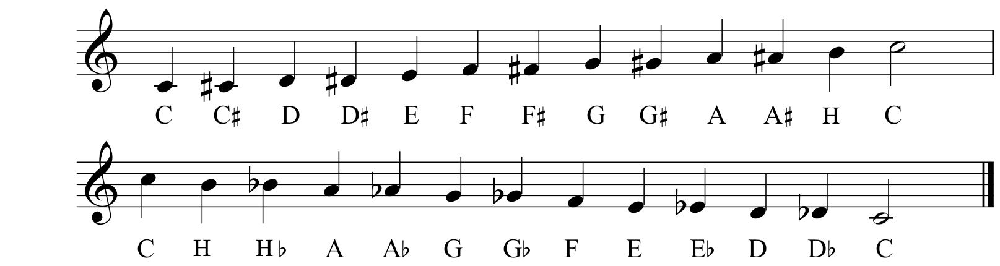
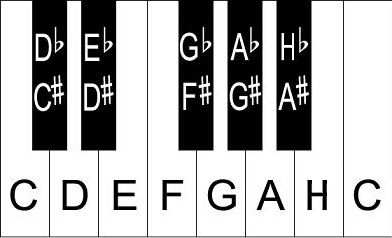

Her kan du bruke tastaturet ditt som et piano!
Bokstavene A-K på den midterste tastaturraden er alle de hvite tangentene i en oktav. W, E, T, Y og U på den øverste raden er de svarte tangentene.
Det kan ta litt tid å bli vant til et "piano" som dette, men bare trykk i vei og lag litt musikk!
Spill tonene du har lest om hittil og tenk på hvordan de henger sammen.
Etter du har trykket deg ferdig her er det på tide med noen quizzer som tester det du har lest om i dette temaet. Lykke til!

